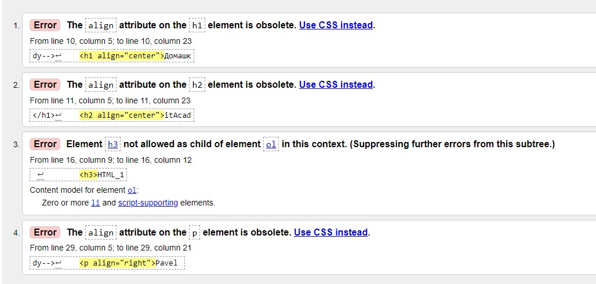
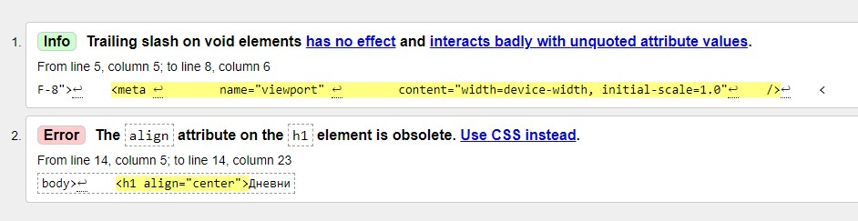
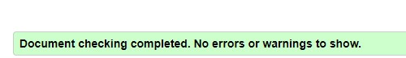
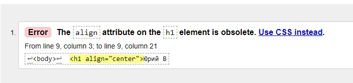

Проверка "index.html":

Видим что в основном устарели аттрибуты "align", т.к. мы не изучали CSS то пропустим данные предупреждения на данный момент. Единственое что можно поправить это 3 "Ошибку". Исправления в commit.
Проверка "DIARY.html":

Видим что в основном устарели аттрибуты "align". Информационное предупреждение заключается в том что тэг <meta> закрывается с чертой, хотя это одиночный тэг (я написал с "/" чтобы отделить тэг с большим количеством параметров от других). Исправления в commit.
Проверка "vizbor.html":

Видим что в ошибок и предупреждений нет.
Проверка "vechno_student.html":

Видим что в основном устарели аттрибуты "align". Пока не изучали CSS.
←